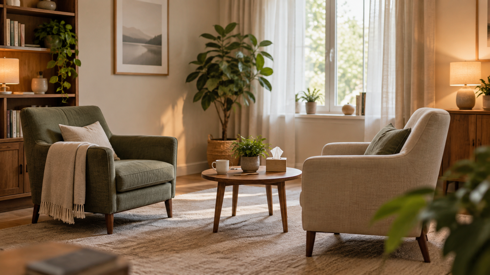

01
Kim jesteś
Twoje doświadczenie i sposób pracy pomagają odwiedzającemu poczuć, że trafił we właściwe miejsce.
STRONY DLA GABINETÓW I TERAPEUTÓW
Tworzymy strony dla psychologów, terapeutów i gabinetów specjalistycznych. Wyjaśniamy, jak pracujesz, dla kogo jest pomoc i jak umówić rozmowę - bez przeładowania informacjami.
Zobacz bezpłatny podgląd →
01
Twoje doświadczenie i sposób pracy pomagają odwiedzającemu poczuć, że trafił we właściwe miejsce.
02
Porządkujemy obszary pomocy, żeby użytkownik mógł rozpoznać swoją potrzebę.
03
Kontakt, konsultacja i najważniejsze pytania są dostępne bez przeklikiwania kilku profili.
CO MOŻE ZAWIERAĆ STRONA
REALIZACJA
Przykład prawdziwej strony przygotowanej dla gabinetu terapeutycznego.
Zobacz stronę na żywo →PRZYKŁADOWY PROJEKT
Projekt demonstracyjny z przykładowymi danymi. Twój podgląd przygotujemy na Twoich treściach i zdjęciach.
Stonowany układ, który wyjaśnia zakres pomocy, pierwszą konsultację i najważniejszy kontakt.
Zobacz przykład